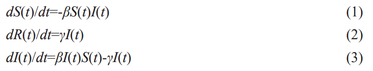

首先让我们想象一个最简单的传染情况，它的假设如下：
让我们来看看这个最简单的情况吧！
红色表示活跃的感染者。
你可以点击棋盘来使其重新开始模拟。
我们可以发现，在最简单的传染模拟中，只要我的邻居被感染，那么一天后，我一定会被感染。显然，这与我们的生活常识不符。我们可以考虑两个生活中常见的原因：
因此，我们可以引入一个新的概念，即感染概率，它表示我的邻居感染后，我被感染的概率。接下来，我们一起来看一下加入感染概率之后的传染模型。
你可以调节棋盘下方的滑动条，来设置你想设定的感染概率，默认感染概率被设置为 0.5。
引入感染概率的概念后，我们的模型看起来比最简单的情况真实了不少，值得庆祝！但是，还存在一个十分恐怖的问题：我被感染之后，将永远不会康复！如果真的存在这样的传染病，这将是人类面临的最可怕的灾难。因此，我们再引入一个概念，即康复日期，它表示一个人从感染到康复所需的天数。
红色表示活跃的感染者，蓝色表示已经康复的感染者。
你可以调节棋盘下方的滑动条，来设置你想设定的康复所需的天数，默认康复日期被设置为 4 天。
引入康复的概念后，在经历一波疫情后，所有人都会康复。这当然是我们希望发生的，但不幸的是，在现实生活中，即使是一次普通的流行性感冒，也有可能夺走一些人的生命。这就是我们接下来要引入的概念：死亡率，它表示一个人感染疾病后死亡的概率。
红色表示活跃的感染者，蓝色表示已经康复的感染者，黑色表示死亡者。
你可以调节棋盘下方的滑动条，来设置你想设定的死亡率，默认死亡率被设置为 0.01。
现在，我们的模型基本上有模有样了。通过这段简单的探索，我们引入了传染模型中最基本的几个概念，即感染概率、康复天数、死亡率。但是，我们的旅程还远未结束，我们的简单模型还有很多不足：
不要着急，让我们继续我们的探索……
现在，让我们正式进入我们的模型研究——SIR传染病模型：
SIR模型是一种传播模型，是信息传播过程的抽象描述 。它是传染病模型中最经典、最基本的模型。
为了更好地描述这个模型，让我们进行一些基本的假设：
S(t): 表示易感者（susceptible）的数量，包括在t时刻未被感染但有可能被感染的人群数量.
I(t): 表示感染者（infective）的数量，指在t时刻已被感染成为患者并且具有传染力的人群数量.
R(t): 表示移出者（removed）的数量，表示t时刻时已经从感染者移出的人群数量（包括隔离者以及 因治愈获得免疫力的人群）.
γ: 恢复率系数，从染病者中移出的人数与病人数量的比例成正比，比例系数为γ.
β: 感染系数，t时刻单位时间内，一个病人能传染的易感者数目与此环境内 易感者总数S(t)成正比，设定比例系数为β.
根据这些假设，我们就可以创造出SIR模型的微分方程：

当然，没有多少人会愿意在飞速浏览网页的过程中解决一个晦涩的微分方程（更别说这里有整整3个！)，为了让大家的目光多在这个重要的模型上停留一会，我们相信一个可视化的图表可以给大家一个更加清晰地感知：
在该图中，你可以滑动拖动条，自发地探究SIR模型的奥秘：
可以看出，在一个感染者数量占易感者数量的0.0000001的社区中，不同的恢复率系数与感染系数对易感者、感染者和移出者的数量影响巨大！这也说明了传染性强的疾病（比如COVID-19）为什么如此可怕！
以上SIR模型说明了在没有外力（例如隔离措施）影响下传染病在人群中的发展，但是，高速发展的现代社会是不会任由疾病随意蔓延，接下来，让我们看一下在真实世界条件下的仿真模拟。
上面我们探索了数学化的传染模型，现在让我们继续以一种直观的方式进行仿真模拟。
我们先说明一些基本的约定：
除了这些基本约定，在下面新的仿真模型中，我们还引入了一个新的概念，即隔离。正如中国和日本在新冠肺炎疫情前期所做的那样，在抗击疫情中使用隔离政策是非常有用的。在我们的模型中，你可以自由调节隔离的两个参数：
接下来，你可以自由地调节这些参数，来模拟一次疫情的来临。
你可以有目的地调节上面的参数，来探究一些问题，比如：
调节参数，回答一下上面的问题吧。你也可以自己提出一些问题来模拟，祝你玩得愉快！
我们的探索旅程到这里基本结束。虽然我们的模型模拟了一些传染的参数，实现了简单的传染病理想化模拟，但是在现实生活中，影响疫情扩散远不止这些因素。比如学校、超市等公共场所的聚集、民众的社交距离和防疫意识、国家的防疫政策等。下面，让我们来看一下，在复杂的现实案例中，疫情是如何扩散的。
接下来的图，我们会看到2020-04-12日到 2022-12-5日每日美国各州新冠疫情情况（感染人数，死亡人数和康复人数）。
我们的探索旅程到此结束，我们了解了基本的传染病模型。更进一步，你还可以根据种群生长的特性、疾病的发生及在种群内的传播、发展规律，以及与之有关的社会等因素，建立能反映传染病动力学特性的数学模型；通过对模型动力学性态的定性、定量分析和数值模拟，来分析疾病的发展过程、揭示流行规律、预测变化趋势、分析疾病流行的原因和关键。
最后，愿凛冬尽散，星河长明，在未来的某刻，我们一定能在疫情散尽的世界自由呼吸。